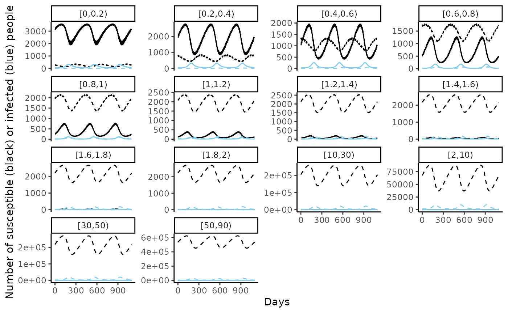
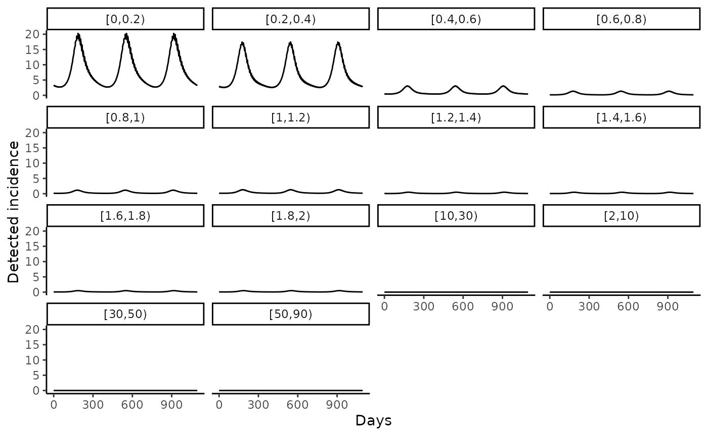

library(RSVsim)
library(ggplot2)
# specifying the some age limits to use with the model
age.limits <- c(seq(0, 1, 0.2), seq(10, 60, 20))In this vignette, we give an overview of the mathematical model of RSV transmission, and how to run the model using this package.
Model structure
The model is an adapted version of an susceptible-exposed-infectious-recovered-susceptible (SEIRS) deterministic, ordinary differential equation (ODE) model outlined in:
Hogan, A. B., Campbell, P. T., Blyth, C. C., Lim, F. J., Fathima, P., Davis, S., … & Glass, K. (2017). Potential impact of a maternal vaccine for RSV: a mathematical modelling study. Vaccine, 35(45), 6172-6179, https://doi.org/10.1016/j.vaccine.2017.09.043,
Nazareno, A. L., Newall, A. T., Muscatello, D. J., Hogan, A. B., & Wood, J. G. (2024). Modelling the epidemiological impact of maternal respiratory syncytial virus (RSV) vaccination in Australia. Vaccine, 42(26), 126418, https://doi.org/10.1016/j.vaccine.2024.126418.
In brief, the model is age-structured and primary (the first) and secondary infections (any subsequent infection) are specifically tracked. The age-specific force of infection is determined by a seasonal forcing function and the age-specific contact matrix (the mean contacts per person).
Contact matrix
The R/create_contact_matrix.R function obtains contact matrices with age groupings that are less than one year. To do so, the socialmixr (https://epiforecasts.io/socialmixr/) package is used to obtain the contact matrix for the age groupings to the nearest whole year, using the POLYMOD data (https://doi.org/10.1371/journal.pmed.0050074). This contact matrix is calculated such that the total contacts in the population are symmetric (assuming population data from World Population Prospects of the United Nations). Within age groupings less than one year old these contacts are divided evenly according to the size of the age grouping (in years).
The function takes two arguments the country to obtain the POLYMOD contact data from and the age limits for the age groupings.
contact_population_list <- RSVsim::create_contact_matrix(country = "United Kingdom", age.limits = age.limits)
#> Warning in RSVsim::create_contact_matrix(country = "United Kingdom", age.limits = age.limits): Not all age.limits are integers.
#> The contact matrix was calculated for the age groups given by the integers
#> and divided uniformly within the smaller age groups.
#> A warning from socialmixr about linearly estimating the integer age groups within the 5-year age bands will also appear.
#> Warning in pop_age(survey.pop, part.age.group.present, ...): Not all age groups represented in population data (5-year age band).
#> Linearly estimating age group sizes from the 5-year bands.
matrix_mean_plot <- contact_population_list$matrix_mean |>
as.data.frame() |>
tibble::rownames_to_column("age_y") |>
tidyr::pivot_longer(-age_y, names_to = "age_x", values_to = "mean_contacts")
ggplot(data = matrix_mean_plot,
aes(x = age_x, y = age_y, fill = mean_contacts)) +
geom_tile() +
xlab("Age") + ylab("Age") + theme_bw()Default parameters
To obtain a list of the default parameters to run the model the R/get_parameters.R function. The parameters can be changed by using the overrides argument.
parameters <- RSVsim::get_parameters(overrides = list("b0" = 0.15),
contact_population_list = contact_population_list)Running the model
To run the model the R/run_model.R function is used. Cohort aging is used to age the population at each time the smallest age group has completed the time within that age group. If no initial conditions are given it is assumed there is one percent prevalence in the primary infection compartment and everyone else is susceptible to primary infection. All new borns are assumed to be susceptible to their primary infection. Below we plot the simulated number of people that are susceptible and infected, with the line type indicating whether the infection is primary or secondary.
out <- RSVsim::run_model(parameters = parameters,
max_t = 3650, # maximum time to run the model for
cohort_step_size = 10, # time at which to age people
dt = 0.5, # time step to get model outputs for
init_conds = NULL)
ggplot(data = out |> dplyr::filter(time > (3650 - 365 * 3))) +
geom_line(aes(x = time, y = Sp), linetype = 1) +
geom_line(aes(x = time, y = Ss), linetype = 2) +
geom_line(aes(x = time, y = Ip), col = "skyblue", linetype = 1) +
geom_line(aes(x = time, y = Is), col = "skyblue", linetype = 2) +
facet_wrap(~age_chr, scales = "free_y") + theme_bw() +
xlab("Days") +
ylab("Number of susceptible (black) or infected (blue) people")
The incidence, detected incidence and prevalence are also calculated. Age-specific detection probabilities are used, and in the default parameters we assume no one is tested over the age of 2 years old.
ggplot(data = out |> dplyr::filter(time > (3650 - 365 * 3)),
aes(x = time, y = DetIncidence)) +
geom_line() +
facet_wrap(~age_chr) + theme_bw() +
ylab("Detected incidence") +
xlab("Days")
ggplot(data = out |> dplyr::filter(time > (3650 - 365 * 3)),
aes(x = time, y = prev)) +
geom_line() +
scale_y_continuous(labels = scales::percent) +
facet_wrap(~age_chr) + theme_bw() +
ylab("Prevalence") +
xlab("Days")